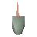

Mouse

| Config name | witchrat |
| NPC id | 901 |
| Combat level | hidden |
| Wander range | does not move |
| Movement | nomove |
| Defined in | scripts/quests/quest_ball/configs/witches_house.npc |
Mouse
Deceptively mouse shaped.
Locations
This NPC is not placed on the map by the map files (it may be spawned by scripts, e.g. during quests, or be a variant).
Dialogue
This doesn't seem to be the right magnet to open this door...
You attach the magnet to the mouse's harness. The mouse finishes the cheese and runs back into its hole. You hear some odd noises from inside the walls. There is a strange whirring noise from above the door frame.
Quests
Referenced in scripts
scripts/quests/quest_ball/scripts/quest_ball.rs2